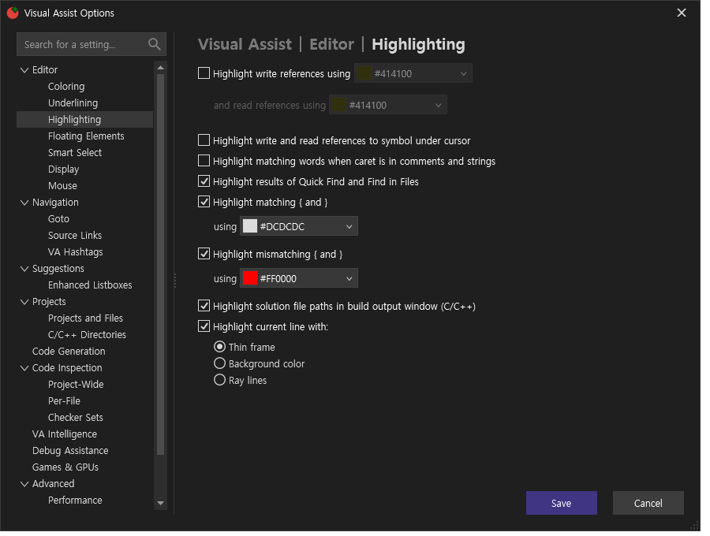
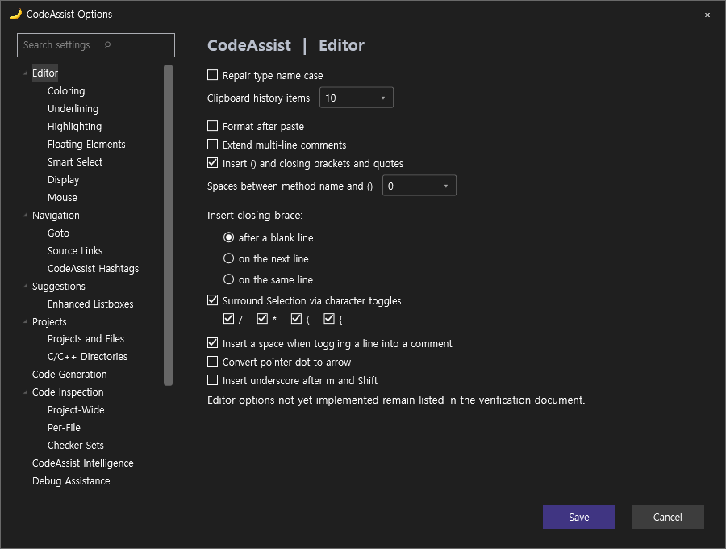

Tracefolio REPORTS & ISSUES
Tracefolio REPORTS & ISSUESVA / CA 실제 옵션 페이지 대조
기존 기록 이전원문에 기록된 작업 내용과 당시 검증 범위를 정리한 보관 기록입니다.
보관 기록 · 결과와 검증 범위는 원문 작성 시점을 기준으로 읽어주세요.
initial
VA
상태 JSON

CA
상태 JSON

원문과 편집 이력
- 원문 SHA-256:
1bb6eaa891dfeaf4c0d8d7eb40d91731e1d224ee3d2ce6bba3b8a32c1b54383a - 표시 날짜는 원본 파일의 수정 시각입니다. 작업 완료 시각은 원문에 있는 값을 기준으로 확인합니다.